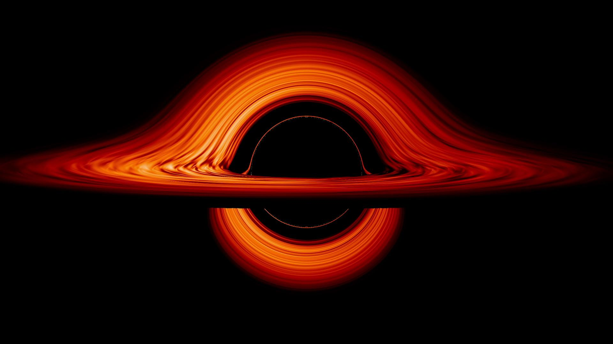

Hi! (:
Smaller black holes can form from the gravitational collapse of a gigantic star, which forms a singularity from which nothing can escape — not even light, hence the name of the object. No one is quite sure what lies within a black hole, or what would happen to a person or object who fell into it – but research is ongoing.
An example is gravitational waves, or ripples in space-time that come from interactions between black holes. This was first predicted by Albert Einstein at the turn of the last century, when he showed that time and space are linked; time speeds up or slows down when space is distorted.
As of mid-2017, the Laser Interferometer Gravitational-Wave Observatory (LIGO) Scientific Collaboration has announced three black-hole interactions and mergers detected through gravitational waves, in just two years.
The team found these three events in about two years, indicating that when LIGO is implemented at full sensitivity, the observatory may be able to find these sorts of events frequently, scientists said in May 2017. Should a bunch of these black hole events be detected, it could help scientists learn how black holes of a certain size (several tens of sun masses) are born, and later merge into new black holes.
